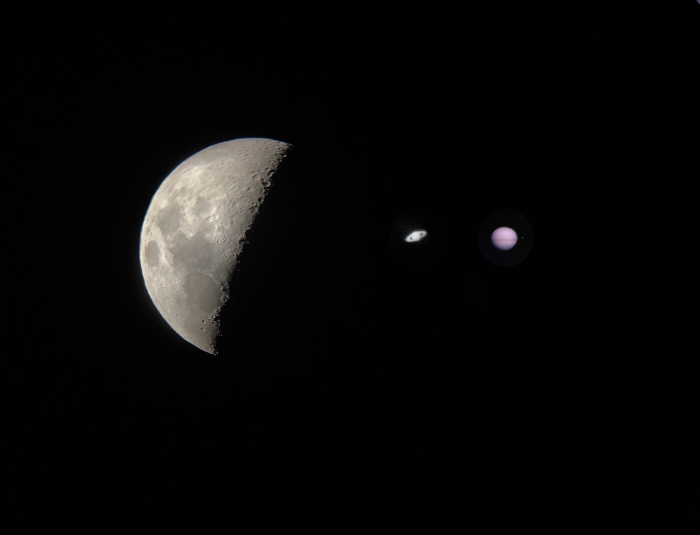

분류 : 인물
|
1995년생 포항 사나이
|
|

|
|
영화보기, 밤하늘 보기, 구기종목, 랄로
|
1.개요
안녕하세요. HTML 개인과제로 자기소개 페이지를 작성해봅니다. 원래 해보고싶었어요. 진짜에요.
작동되는건 아직 거의 없어요 ㅠㅠ 스크롤시 목차가 따라다녀요. 어거지로 반응형도 해봤습니다.
2.특징
왼쪽사진은 영화관에서 사람이 아무도 없는 틈을타 몰래 찍은거구요 오른쪽 사진은 집에서 망원경으로 본 이미지를 휴대폰으로 대놓고 찍은겁니다
영화보는거, 밤하늘 보는거, 운동은 구기종목 다 좋아해요 같이하실분 연락주세요 여성분만요
2-1.특징
1.제일 왼쪽은 달입니다
보름달일때는 반사되는 빛이 너무 강해서 사진이 안찍히더라구요
2.두번째사진은 토성 입니다.
처음 눈으로 봤을때 소름이 돋았어요
무슨 똥파리같은게 보이는데 자세히보면 토성이에요
3.세번째사진은 목성 입니다.
자세히보면 위성도 보인답니다. 색상이 조금 이상한데 배경화면을 검정색으로 만들려다보니 저렇게 되었습니다.